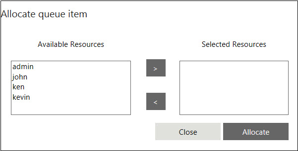
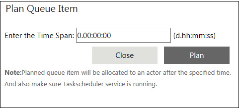

No
The work items list shows a separate folder for every queue that the user is a participant in. When a work item from the queue is assigned to the actor, it is moved to the Inbox. The folder displays all items that are assigned to the queue. However, the display of all queue items is subject to the rights assigned to the user for the queue.
When the queue is configured for manual dispatch and the actor has access rights to pick the next item from the queue, the actor can view the Next Item button at the top of the Work items list along with the corresponding drop down. After completing the current assigned task, the actor can select the queue from the drop down and click on the button to pick the next item for action.
For more information about setting rights for queue participants, see Participants Tab
Queue Item Options
Depending on the queue configuration and the participants, the context-sensitive menu for the queue item lists the following options:
Allocate queue item
Allocates the item to a participant. This option brings up the Allocate Queue Item window.

Move to different queue
Moves the item to a different queue. This option will drop another menu with a list of available queues.
Set Priority: Set the priority of the queue item by selecting the required priority level (High, Medium, or Low) from the secondary menu.
Pick: Allows selection of the participant who will act on the queue item. The actor is picked based on the dispatch pattern that has been set.
Plan: Allows users to plan to get the queue item at a specified time. Selecting this option opens the Plan Queue Item window to enter the lead time for picking up the item.

Cancel Planned Queue Work Item